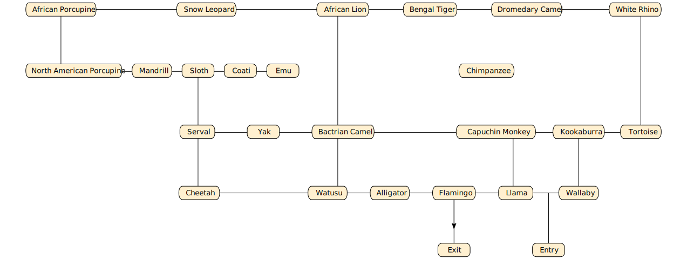

Zoo
The Zoo example represents the transition system representing the visitor location at the zoo. This is the transition graph:

Note that all the transitions are undirected except the transition between Flamingo and Exit, because entering the zoo area using the exit is not allowed.
The example demonstrates valid transitions and the attempt to perform some invalid transitions. In particular, each attempt to enter the Chimpanzee area shows the message “Chimpanzee area is temporarily closed”.
The example also demonstrates StateMachine.Labyrinth, StateMachine.LongestPaths (NP-hard), StateMachine.MaximumPaths (NP-hard), and StateMachine.FindDeadEnds.
This documentation is generated from the extended Markdown documentation using Extensible Markdown for Visual Studio Code.